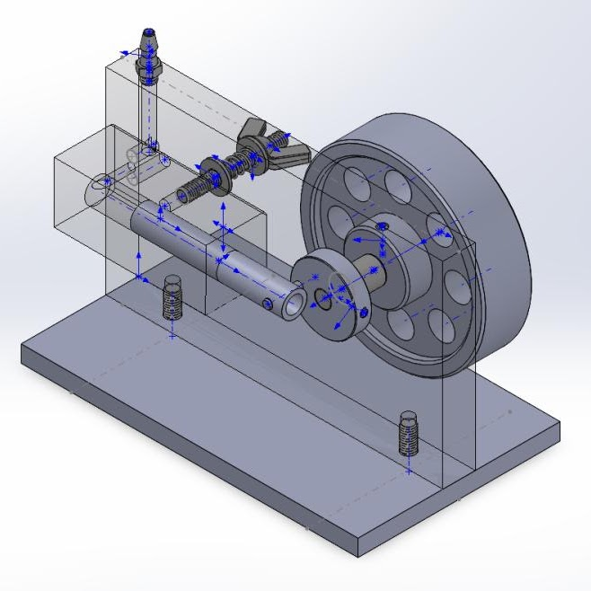
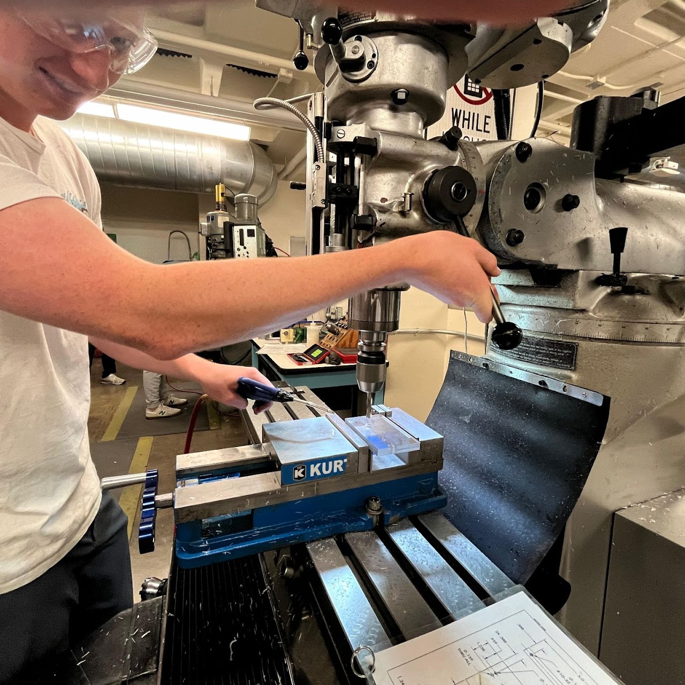

Wobbler Engine
Take a set of technical drawings, rebuild them in CAD, then actually machine the parts and race the finished engine. That was the assignment for my three-person team in CAD class, and it was my first real taste of hands-on manufacturing.
The Project
We were handed technical drawings of a wobbler engine and had to recreate the design in CAD, then use those drawings to machine the components ourselves. It was the moment a model on a screen turned into something I could hold.
Getting Hands-On
This project taught me to operate both the mill and the lathe to cut and drill acrylic parts. Bringing a CAD model to life through machining was genuinely rewarding, and it all built toward the finale: an end-of-semester wobbler engine run-off, where teams competed to see whose engine would run the longest.
What I Took Away
More than anything, this reinforced how much precision matters in both CAD and machining. Small errors in the design or the fabrication could noticeably affect how well the engine ran. It was a fun, valuable project that sharpened both my design and manufacturing skills.
Gallery

